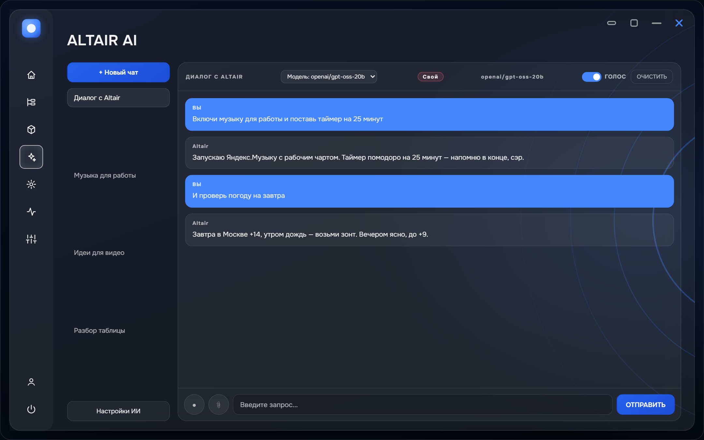
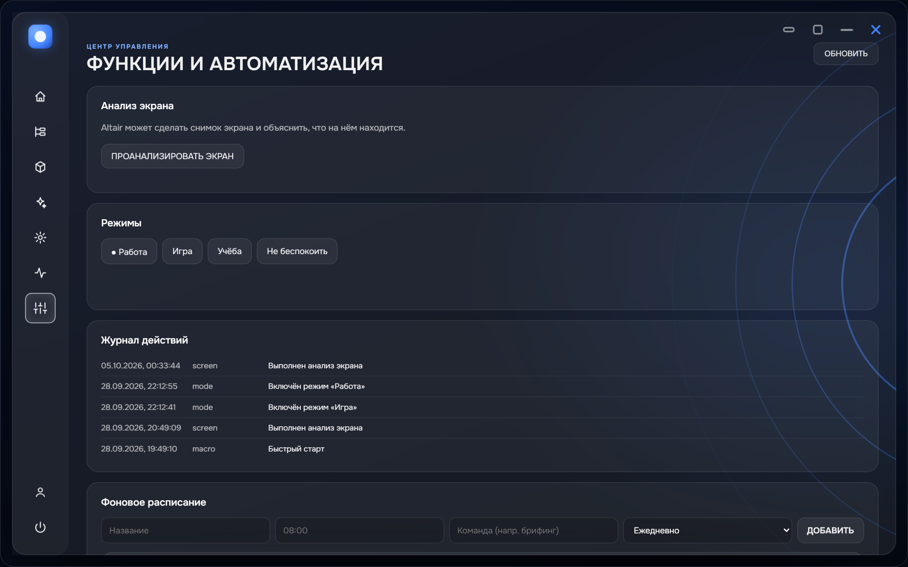
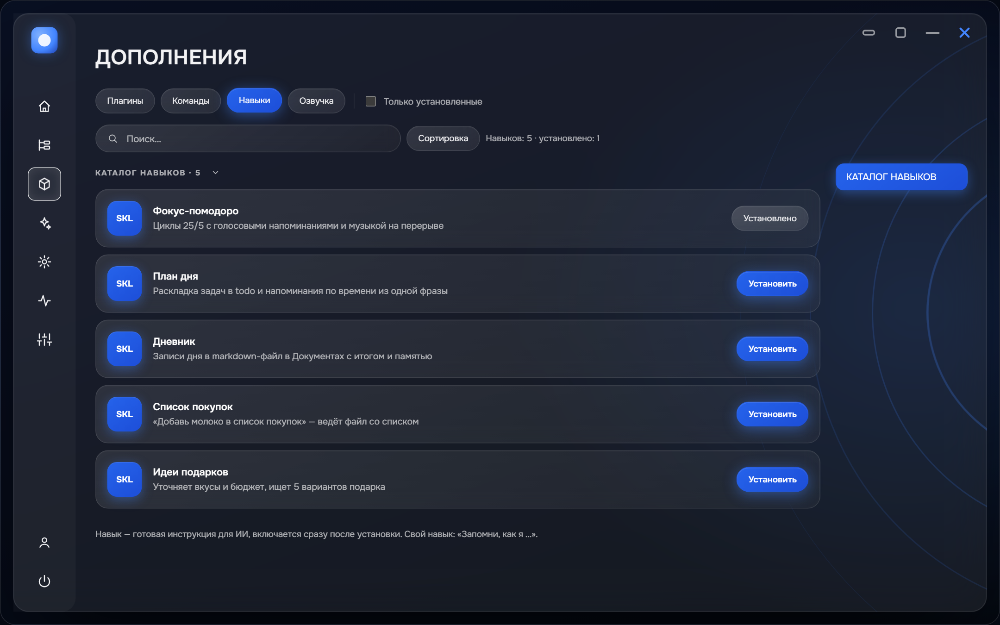
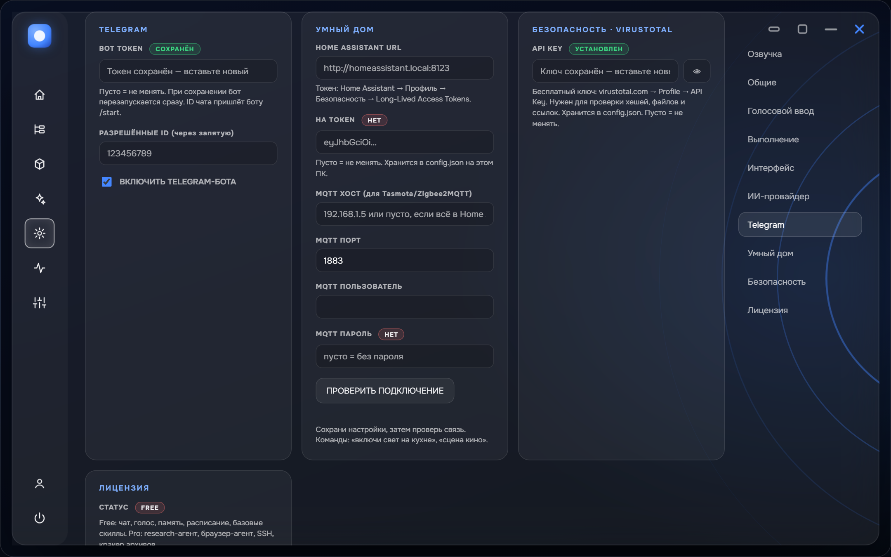

Voice and characters
Listens all the time and wakes on «Jarvis». Answers with a voice: classic Jarvis, GLaDOS, Postal Dude — or your own voice, cloned with RVC.
A voice assistant for Windows. Opens programs, calculates, plays music, answers out loud — and keeps its memory on your own disk.
Jarvis, play music for work
Done, playing music

The wake word brings the assistant up — or just press the mic button and speak.
Recognizes speech, understands the context of the conversation and turns your phrase into a command.
Opens a program, sets a timer, turns on the kitchen light — and answers with its voice.
Listens all the time and wakes on «Jarvis». Answers with a voice: classic Jarvis, GLaDOS, Postal Dude — or your own voice, cloned with RVC.
«Remember how I make a presentation» — it saves the steps and finds them later on request.
skills/learned_презентация.md
The phrase «work mode» opens everything you need in one command. It writes the rule itself, in plain language.
if battery below 20% → quiet mode
«Close the window», «show heavy processes» — by voice. Dangerous actions ask for confirmation.
Lights, outlets, climate and scenes via Home Assistant and MQTT: «movie scene».
Control it from chat: voice messages, reminders, confirmation buttons.
Plug in Ollama — and the assistant needs neither the internet nor API keys.
Launches games from Steam, plays music in Yandex Music and Spotify, adjusts the volume.
Takes a screenshot and explains what is on it — ask «analyze my screen».
Tap a phrase — the assistant answers in the chat above.
Skills, history, rules and settings are local files in your folder. No registration, no accounts. Want zero cloud — plug in Ollama and work offline.



Memory, skills, history and settings are plain files in your folder. No registration, no accounts, no cloud.
API keys and tokens are encrypted with DPAPI (Data Protection API): only your Windows profile can read them. If encryption isn't available, Altair won't write the key in plain text.
With Ollama you need neither the internet nor API keys. The license activates offline (RSA-2048 signature), no server required — no online checks.
Closing windows, processes and system actions wait for your yes: ✅/❌ buttons in the chat.
Works right away, no key
The key activates offline — RSA-2048 signature, no servers
The key goes in Settings, the «License» tab. Reset returns you to Free.
One installer. It sets up Python and dependencies itself — nothing to do by hand.
Only for your voice: recognition runs on your hardware, not in the cloud.
The wake word brings the assistant up — or press the mic button at the bottom of the screen.
«Open Photoshop», «set a timer», «movie scene» — it handles the rest.
jarvis@altair — practice by typing a command
Type a command — for example, «set a timer» or help.
No. Plug in Ollama — and the assistant runs fully offline, with no internet and no API keys. Without Ollama it uses any provider; the keys stay yours.
Locally, in your folder: memory, skills, history, rules and settings — plain files. No registration, no accounts, no cloud.
Classic Jarvis, GLaDOS, Postal Dude — or your own voice, cloned with RVC.
Free includes chat, voice, memory, schedule and base command packs. Pro adds the research agent, browser agent, SSH access and the archive cracker. The Pro key activates offline; a reset returns you to Free.
Yes: Home Assistant and MQTT — lights, outlets, climate and scenes by voice, for example «movie scene». Control goes direct, with no cloud in between.
Windows 10 / 11, 64-bit. The installer brings the rest — nothing by hand.
Go to Settings → pick the right microphone → press «Test microphone».
Reinstall Altair and allow the installer to set up Python when asked.
Check the API key in Settings and make sure the key is active on your provider's website.
Altair uses system APIs to control sound and windows, which can trigger false positives. Add the install folder to your antivirus exceptions.
In Settings, switch the provider or enter your own Base URL and model.
If Windows shows SmartScreen — click «More info», then «Run anyway».